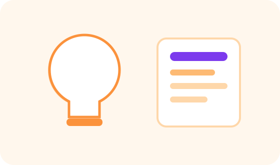

تخلیقی کاموں میں اے آئی
Brainstorming، storytelling، design ideas، music، video، branding اور visual concepts میں مدد۔

Creativity میں AI کا مطلب
AI creativity کو ختم نہیں کرتی، بلکہ ideas بڑھانے میں مدد دیتی ہے۔ یہ آپ کو مختلف angles، themes، names، story concepts، design directions اور visual prompts دے سکتی ہے۔ اصل taste، emotion اور final choice انسان کی ہوتی ہے۔
Brainstorming
جب آپ stuck ہوں تو AI سے 20 ideas، 5 themes، 3 different styles، یا “boring idea کو engaging بنائیں” جیسے prompts مانگ سکتے ہیں۔
AI سے creative options لیں، final direction اپنی brand sense سے منتخب کریں۔
تخلیق میں AI “idea partner” ہے، “artist کا بدل” نہیں۔
Design اور Visual Ideas
AI سے moodboard description، color direction، layout idea، poster text hierarchy، photo concept، background idea، اور image prompt لیا جا سکتا ہے۔ Designer پھر اسے professional design میں بدلتا ہے۔
Storytelling اور Video
AI script structure، reel frames، voiceover draft، scene ideas، hook options، caption variations اور CTA lines دے سکتی ہے۔
Originality کا خیال
AI کے ideas کو جوں کا توں استعمال کرنے کے بجائے اپنی audience، brand اور مقصد کے مطابق بدلیں۔ اگر copyrighted characters، logos یا کسی artist کا exact style copy کرنے کی کوشش ہو تو احتیاط ضروری ہے۔
عملی چیک لسٹ
- کام شروع کرنے سے پہلے مقصد صاف لکھیں۔
- AI کو audience، زبان اور مطلوبہ format بتائیں۔
- جواب کو اپنے حالات کے مطابق edit کریں۔
- اہم معلومات، تاریخیں، قیمتیں اور facts ضرور verify کریں۔
- ذاتی، مالی یا حساس معلومات share کرنے سے بچیں۔
Quick Quiz
نیچے دیے گئے سوالات حل کریں تاکہ آپ اپنی سمجھ چیک کر سکیں۔